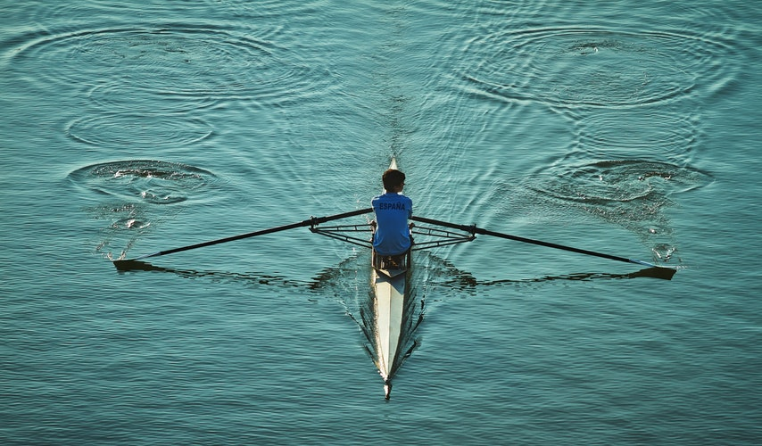

Rowing

The sport can be either recreational for enjoyment or fitness, or competitive, when athletes race against each other in boats. There are a number of different boat classes in which athletes compete, ranging from an individual shell to an eight-person shell with a coxswain.I started rowing when I was around the age of 10. I row with my local rowing club **** rowing club.I train around twice a week usually in the fitness gym.
Horse Riding

The sport refers to the skill and sport of riding, driving, steeplechasing or vaulting with horses. This broad description includes the use of horses for practical working purposes, transportation, recreational activities, artistic or cultural exercises, and competitive sport. I have been horse riding since I was seven. I started in my local equestrian centre and have stayed there ever since. I occasionally partake in competitions around Ireland and really enjoy this.
Gymnastics
Gymnastics is a sport that includes exercises requiring balance, strength, flexibility, agility, coordination and endurance. The movements involved in gymnastics contribute to the development of the arms, legs, shoulders, back, chest and abdominal muscle groups. Alertness, precision, daring, self-confidence and self-discipline are mental traits that can also be developed through gymnastics.I have competed nationally with my gymnastics club in Balincollig. I started from a young age.I participated in acro and tumbling competitions. I trained four times a week and competed montly.
Camogie
Camogie is an Irish stick-and-ball team sport played by women; it is almost identical to the game of hurling played by men. Camogie is played by 100,000 women in Ireland and worldwide, largely among Irish communities. It is organised by the Dublin-based Camogie Association or An Cumann Camógaíochta. UNESCO lists Camogie as an element of Intangible Cultural Heritage. I played Camogie up until last year but unfortunately I no longer play.